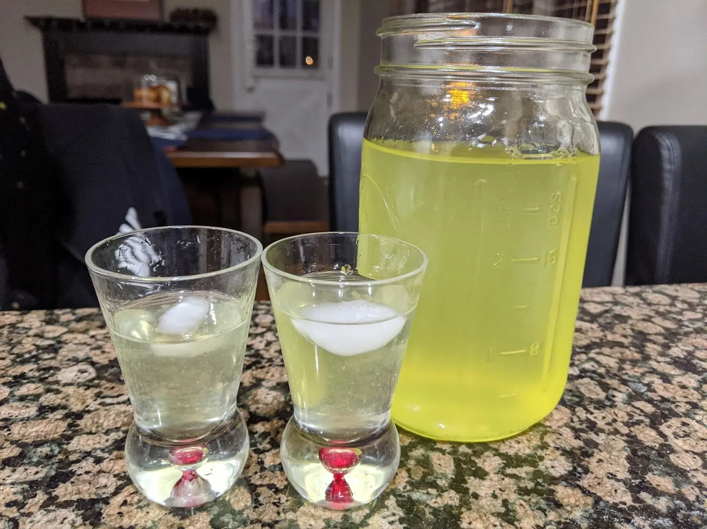

Limoncello

- ⏲️ Prep time: 10 min
- 🍳Wait time: 20 days
- 🍽️ Servings: 22
Ingredients
- 5-7 organic lemons (regular lemons are covered in wax)
- 300ml 95% ABV grain alcohol
- 700ml water
- 500ml sugar
Directions
- Pour the alcohol into a 1 liter mason jar
- Peel the lemons avoiding the white pith (it will make your limoncello bitter) and submerse them in the alcohol
- Cover the jar and let the lemons infuse the alcohol for 20 days
- After the infusion is completed, create a simple syrup by boiling the water and dissolving the sugar in the water
- Allow the water to cool completely, then strain the alcohol into the sugar water and stir
- Bottle or put it back into the mason jar
- Feel free to scale the recipe up or down, and adjust the sugar to the sweetness you like, but the ABV should remain somewhere around 28-30%
Contribution
- mfed3 - xmr:
48eEMdYtCQaV5wY7wvmxK6jCxKkia9dgpNTMNT1do7RLWXCwWDgSKjN3kiZ6yHbAuAXWgDGN6imnGT9NPeHWD7zX9hSyHu2